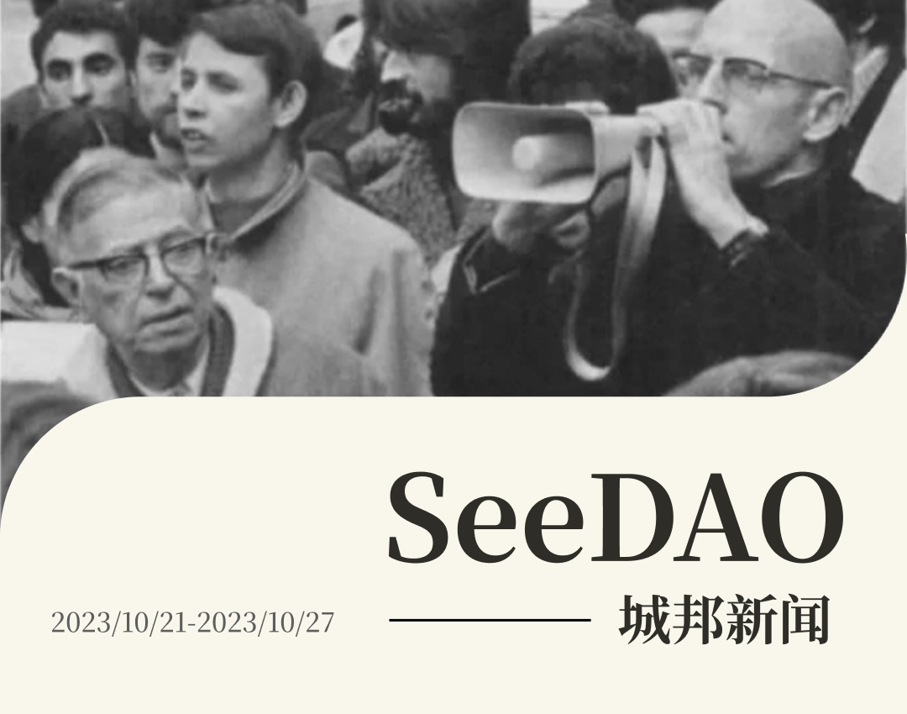
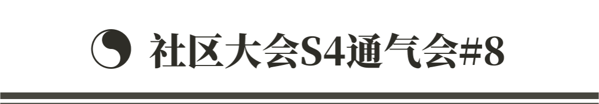
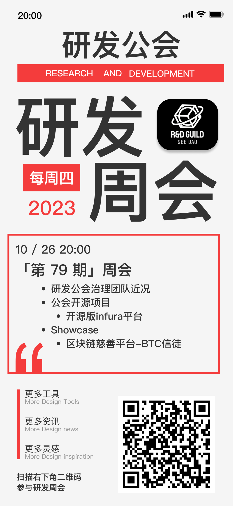
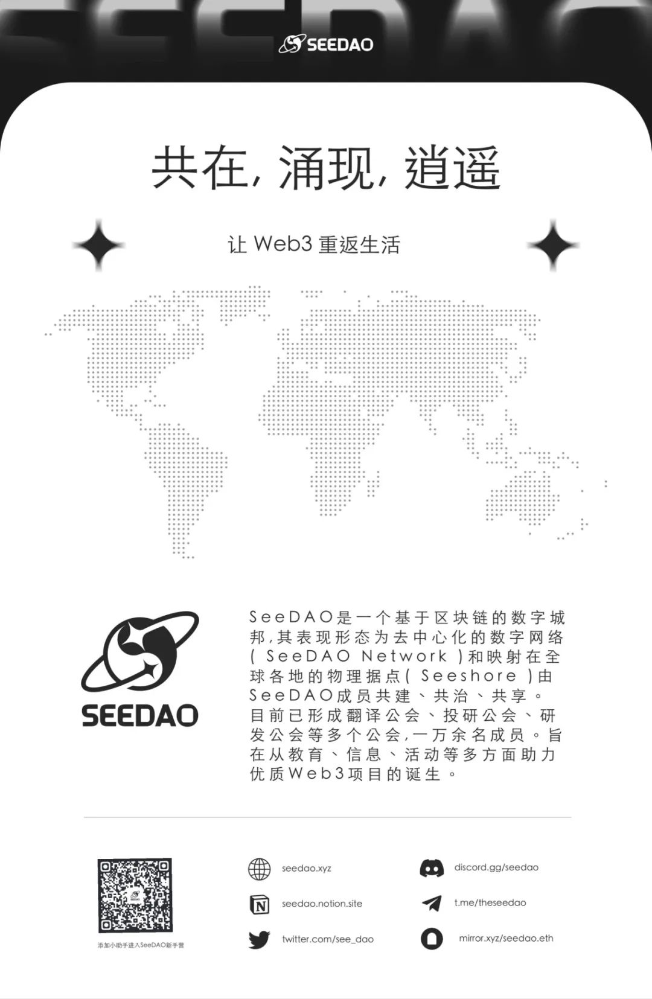

✦ SeeDAO APP 上线，市政厅内部使用培训
✦ 节点大会优化讨论
✦ SeeDAO wiki 发包
✦ Notion 使用规范
✦ “SeeDAO两周年” 提案再版
✦ SeeDAO媒体和品牌在官网和App上的呈现
✦ 新项目：SeeDAO wiki、SeeDAO 播客
✦ SeeDAO品牌物料分发规则初版
✦SeeDAO 海外TG群建立提案

✦ 内容｜twitter space：Web3华人社区生态发展与探讨/19 Oct
✦内容｜SeeDAO姐妹在博鳌x10位, Chloe赵&席烊@成都 关注白读
✦内容｜HashKey Open Day 香港社群&KOL

✦ SeeDAO x Moongate
✦SeeDAO x Knexus（KNN3 ai工具教学活动，deschool参与其中）
✦SeeDAO x Uncommons（社区合作商谈）
✦SeeDAO x Narwhal（perp dex项目，暂不合适）

✦ OS 集成日历 提交规则 (整理完）
✦ OS 集成悬赏酒馆 整理规则和使用手册（整理中）
✦ 日常维护、软件项目评估报告规则制定 (整理中)

✦ 本周本周P1、P2、P3 提案 无新增，无结项。

✦ 项目推进：翻译一本书，｜选书会 + 译者招募（有兴趣的小伙伴速来撩）🔥
✦ 下周共学嘉宾 Saku
✦ 目前SeeDAO内研发、投研、治理都已采用 DCNews-bot同步微信群消息，同步推进投票流程。
✦ 翻译公会｜xunyang《关于 DAO 的自治及工作组使用的研究》
✦ 翻译公会｜xunyang《建立 DAO 还是不建立 DAO：所有的元宇宙都必须去中心化吗？》

✦ 分分享主题：区块链 Mass Adoptioon未来以及深入PoW 2.0
/ 分享嘉宾：KJ｜西交利物浦大学的密码学博士，第一个有用的PoW算法的发现者。基于这一新科学发现，也在开发基于PoW 2.0的公链
✦ 活动 : 投研公会正在开展 Dao Tool 调研活动，诚邀小伙伴来参加认领研究赛道目前赛道

✦ 开源项目：开源的infura平台
✦ Showcase：区块链慈善基金：重建公益慈善信任，引领公益慈善 @BTC信徒（13年币老韭菜见朋友圈）

✦ Show Case 环节招募及展示
Showcase是研发公会为大家提供了一个展示交流平台，面向所有个人和项目方。
如果你是项目方想要推广项目💻
如果你多才多艺想要一个平台展示自己🙋
如果你有想法需要寻找小伙伴一起实现👫
那么，研发公会的周会Showcase环节很适合你🙌
招募表单👉 https://tally.so/r/mBpL65


✦ SeeDAO 城邦造物｜这是一场以搞钱为目的的活动
✦ SeeDAO 伊斯坦布尔 Co-living 开放入住申请

编者按：
很多人都相信AI技术正在引领下一场工业革命，但很有可能在这场革命中我们首先遭遇的是重重危机，我们的思想观念和社会秩序也将面临动荡。Web3作为一系列技术路线、观念思潮和政治行动的融合体，在AI崛起之后，并不会成为过气网红，反而是人类自我救赎的一大良药。
—
